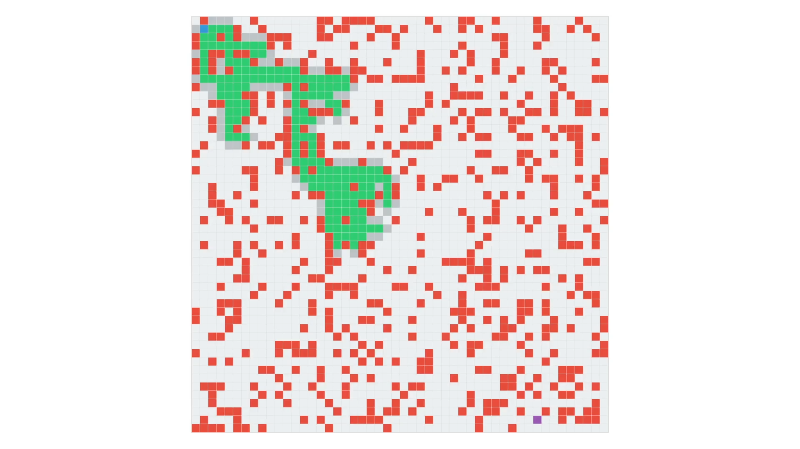
Visualistion A* | Javascript-Canvas
By implementing the A* algorithm with JavaScript and Canvas, I created an interactive game of life where players navigate through a grid with obstacles, looking for the shortest path. This fusion of technology offers an immersive experience of problem-solving and strategy.
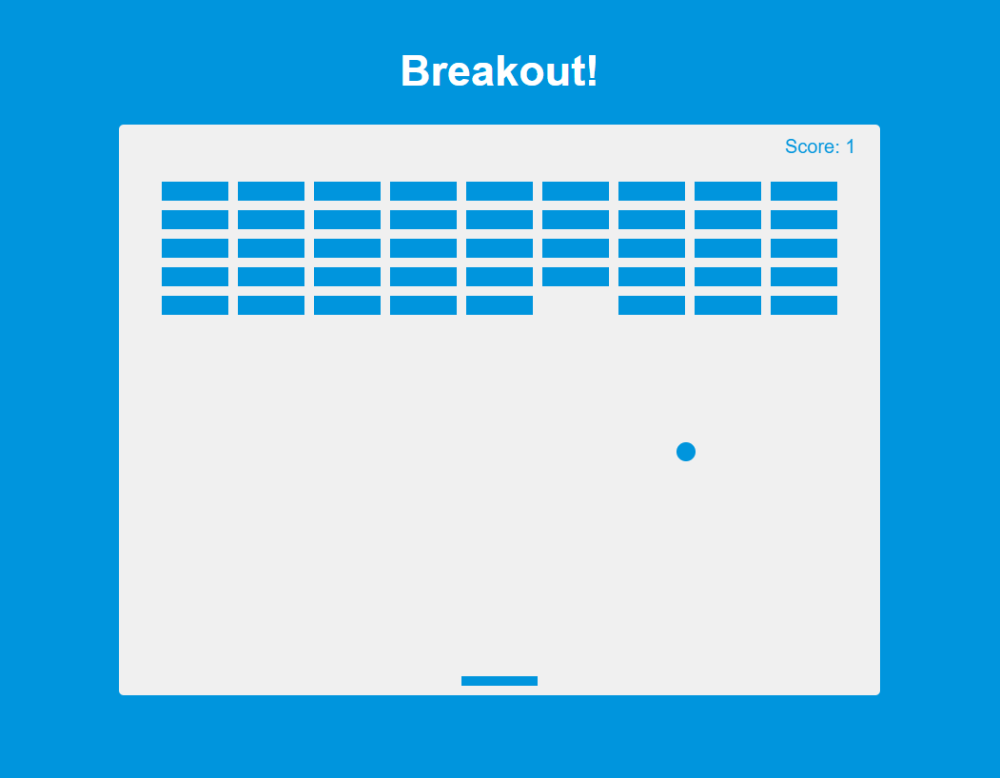
Breakout | Javascript
Using JavaScript, I developed the Breakout game, a revisited classic. Features include DOM manipulation for graphics rendering, collision management and variable difficulty levels. The fluid interaction and retro aesthetic captivate players, providing a nostalgic and entertaining gaming experience.
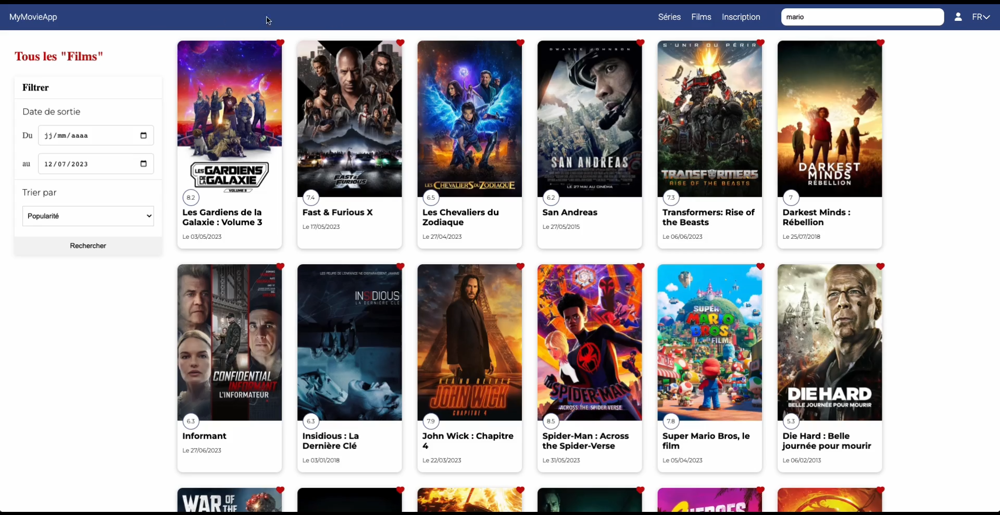
MyMovieApp | Next-Js
Taking full advantage of Next.js, I developed mymovieapp, a complete movie search engine project. Integrating advanced features such as SSR, dynamic routing and external APIs, the application offers a fluid and personalized user experience, with intuitive favorites management.
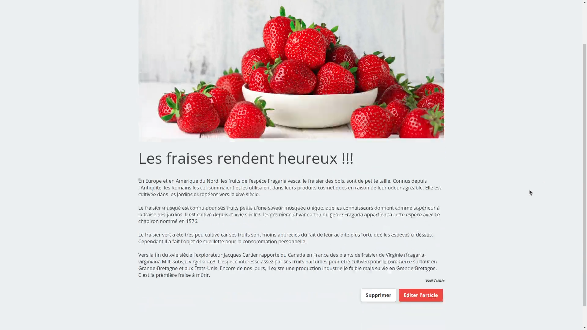
Blog | Php
Thanks to the full exploitation of PHP functionalities, I've developed a robust and dynamic blog project. Database integration, user and comment management, and article customization provide an interactive and engaging platform for readers with a passion for varied content.
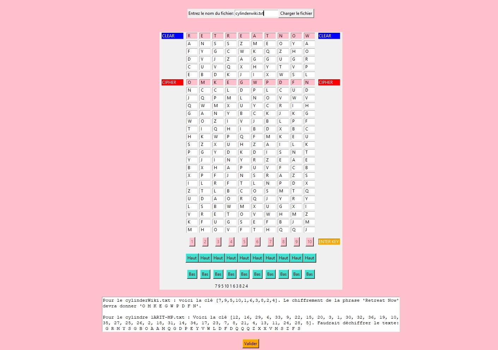
Cylinder | Python-Tkinter
Using Python and Tkinter, I designed a graphical representation of the Jefferson cylinder, with interactive functions to manipulate its dimensions and shape. The visual elements are dynamically generated, offering an immersive experience for exploring this complex mathematical concept.
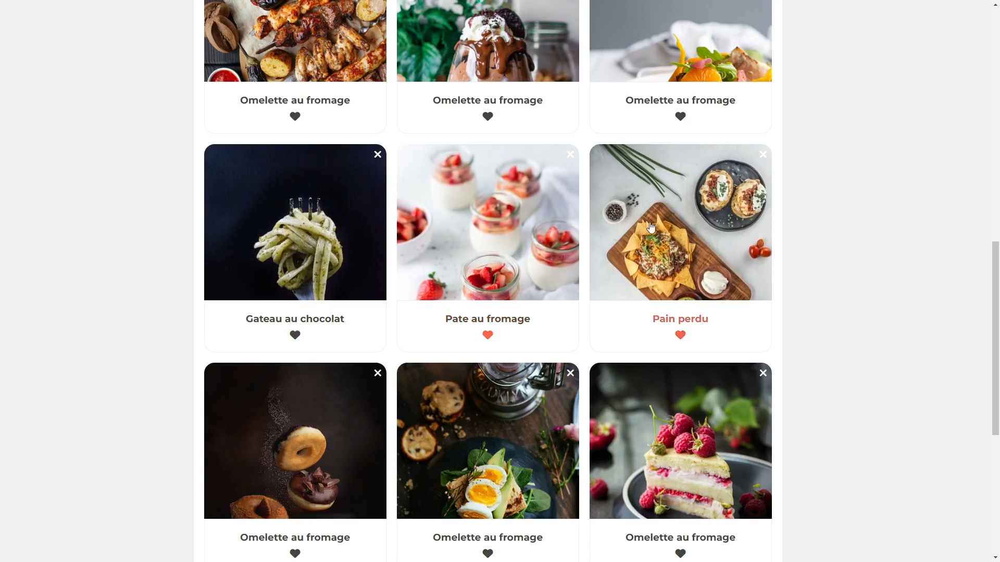
CoockChef | React.js
Taking full advantage of React's functionalities, I designed a dynamic recipe search engine, enriched with a favorites manager. The use of React-hook-form for forms, Yup for data validation and Fetch for API requests ensure a fluid, personalized user experience.
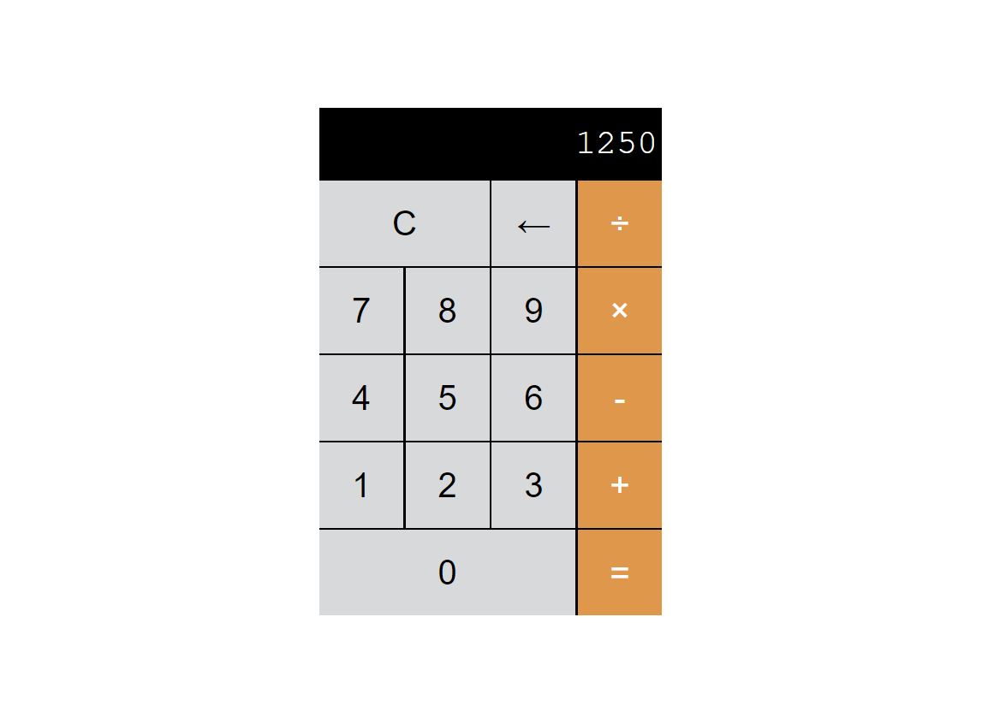
Calculatrice | Javascript
Using JavaScript, I developed an interactive calculator with a user-friendly interface. Features include basic operations, advanced operations such as square roots and percentages, and a responsive interface for smooth use on all devices.
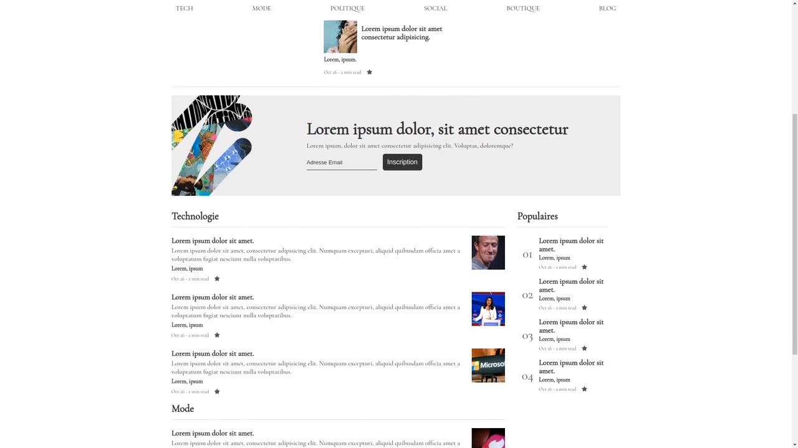
Medium | Html-CSS
By combining CSS grids and flexible boxes, I recreated a page inspired by Medium. Responsive layouts and elegant CSS styles were used to reproduce the aesthetics and user-friendliness of the well-known blog site, offering an immersive and enjoyable reading experience.
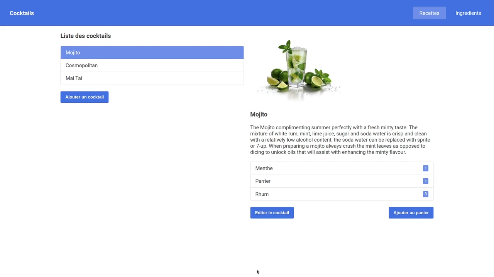
Cocktails | Angular
Through extensive use of Angular features, I developed an interactive cocktail recipe book. Dynamic components, fluid routing and efficient data management offer users an immersive experience for discovering and sharing cocktail recipes in an intuitive, user-friendly way.
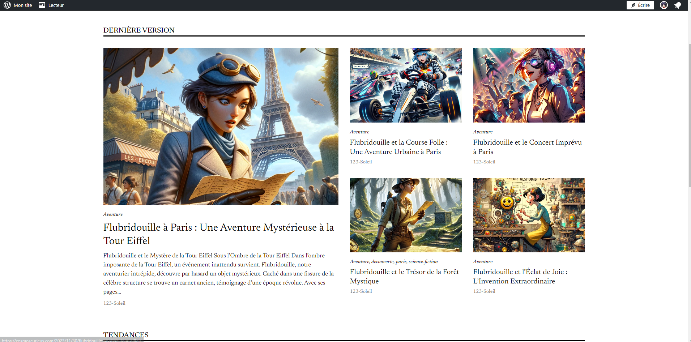
Flubidouille | Wordpress
Leveraging the fundamentals of SEO and WordPress, I've created a captivating blog about the fictional adventures of the character Flubridouille. With a search engine optimized structure and user-friendly WordPress features, readers are immersed in an immersive and engaging story.
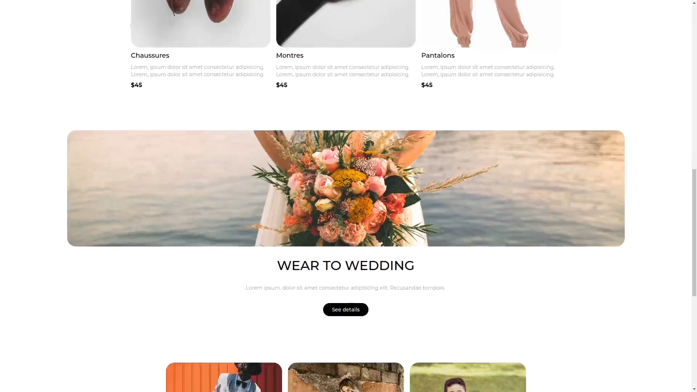
Diane | Tailwind
In designing the Diane site, a clothing brand, I used Tailwind CSS features exclusively to create an elegant and responsive user experience. From predefined components to utility classes, every element is optimized for intuitive navigation and optimal display on all devices.
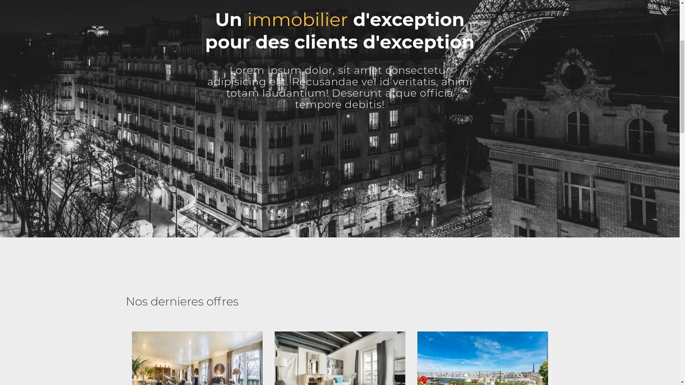
Agence| Html-CSS
Leveraging advanced CSS functionality, I designed a real estate agency's website with fluid animations, elegant transitions and parallax effects. The use of grid layouts, flexboxes and media queries delivers an immersive experience, showcasing properties in an attractive way.
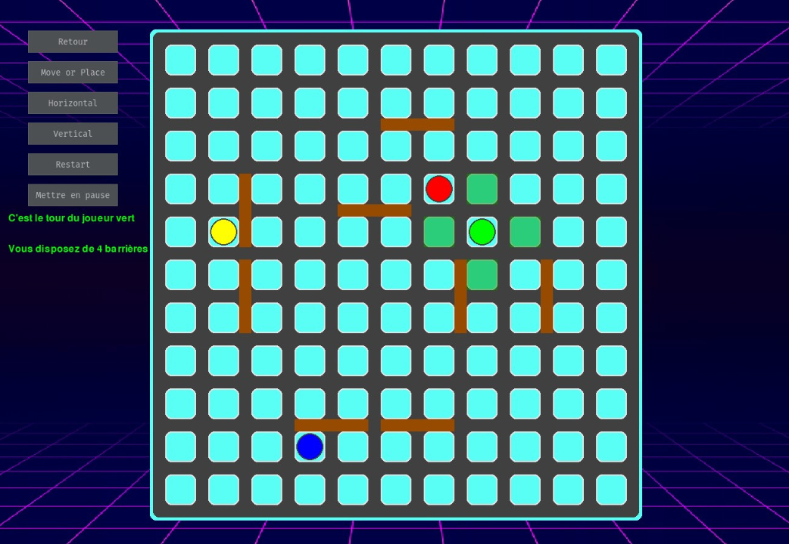
Quoridor | Python-Pygame
Using Python and Pygame, I created the strategy game Quoridor. Advanced features include AI for virtual players, smooth animations, collision management and advanced strategy algorithms for an immersive and challenging gaming experience.
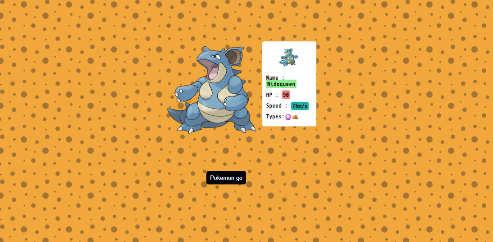
Pokedex | Javascript
Implementing the advanced features of JavaScript, I developed Pokedex, an interactive Pokémon generator site. Using APIs to retrieve data, fluid animations and an intuitive user interface, users can discover, capture and explore a variety of Pokémon in an immersive way.
{kind=link}
{kind=link}
{kind=link}
{kind=link}
{kind=link}
{kind=link}
{kind=link}
{kind=link}
{kind=link}
{kind=link}
{kind=link}
{kind=link}
{kind=link}
{kind=link}